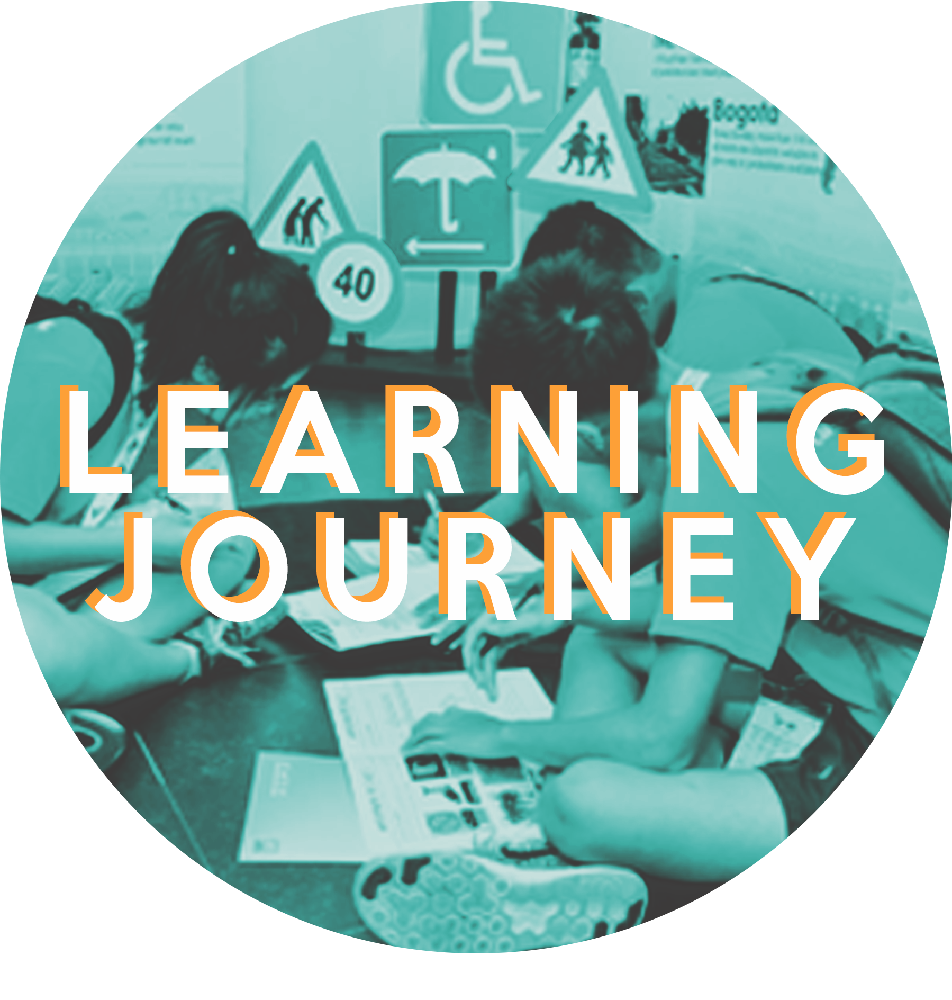

Learning Journeys 学习之旅
Participants will take part in customised programmes and visit key installations that form part of Singapore’s strategic plan to keep the country progressive and competitive while maintaining social harmony and retaining a shared heritage. Here are some information on the places that the participants will be visiting:
SMART CITY
Fusionopolis
Fusionopolis is one of Singapore’s leading research hubs for Information and Communication Technologies.
Fusionopolis plays a pivotal role in developing key technologies that aid in creating a Smart City.
As Leaders of Tomorrow, participants will get the chance to learn about the endless possibilities that science and technology can bring, and the importance of taking the lead to harness and utilise technology to its fullest potential in order to improve our society.
Singapore Mobility Gallery
Officially re-launched by Prime Minister Lee Hsien Loong on 19 September 2018,
Singapore Mobility Gallery features 7 exhibit zones that showcase various facets of Singapore’s dynamic and comprehensive land transport system.
It gives a behind-the-scenes look at how the Land Transport Authority plans, designs and builds our transport system while balancing efficiency, liveability and inclusivity as it leverages technology for smarter urban mobility. Participants can look forward to an interesting learning experience through interactive games and virtual reality (VR) activities that give them insights into the roles people play in the transport industry.
HERITAGE AND COMMUNITY
Singapore History Gallery @National Museum of Singapore
The Singapore History Gallery is located within the vicinity of the National Museum of Singapore.
The gallery adopts a storytelling approach, unveiling different perspectives, through tales of Singapore’s history,
into four main chapters- Singapura (1299 – 1818), Crown Colony (1819 – 1941), Syonan-To (1942 – 1945) and Singapore (1945 – present).
Participants are able to learn about the challenges Singapore faced in the past and how its leaders approached and solved the challenges.
This will equip them with different perspectives and skills in solving challenges which are crucial for Leaders of Tomorrow to possess.
Harmony in Diversity gallery
The Harmony in Diversity gallery was developed by the Ministry of Home Affairs and launched by former President Tony Tan Keng Yam on
2 September 2016. The Gallery aims to promote an appreciation of Singapore's rich religious diversity.
Participants are able to gain a deeper understanding of Singapore’s turbulent history due to many racial conflicts.
They will understand why it is important for them to be proud of and play a part in preserving our racial diversity and harmony as
Singapore has come a long way in achieving these.
CHANGE MAKERS
Singapore Maritime Gallery
The Singapore Maritime Gallery is a gallery which comprises the history of Singapore’s free port from the time when it was first
developed by the British in the 1800’s to becoming one of the busiest ports in the world today.
There are interactive exhibits to help participants comprehend how ships work. Through the informative exhibits,
participants will better understand how the maritime industry in Singapore has evolved and its importance to our economy.
Make The Change (MTC)
Make The Change is an innovative spin-off from the private design academy, M.A.D. School.
MTC strongly believes in empowering and transforming the community through design, thus it organises programmes like Entrepreneurship
101 to inspire youths to become change makers within the community. Participants will understand how this social enterprise tackles
pertinent social problems in today’s world.